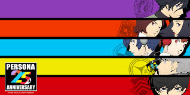
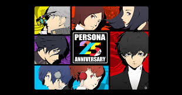
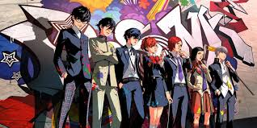

Welcome
Welcome to our in-depth analysis of the mainline Persona series! This site is dedicated to comparing each mainline Persona game to determine which one stands out as the best. Dive in to explore detailed reviews, comparisons, and community opinions on these iconic RPGs.
Meet the Persona Series
Persona 1
Release Date: 1996 (Japan), 1997 (North America)
Platforms: PlayStation, PSP
Plot Summary: Follows a group of high school students who gain the ability to summon Personas and must battle supernatural forces threatening their town.
Persona 2: Innocent Sin / Eternal Punishment

Release Date: 1999 (Innocent Sin, Japan), 2000 (Eternal Punishment, Japan and North America)
Platforms: PlayStation, PSP
Plot Summary: Explores darker themes through interconnected stories, focusing on high school students combating rumors that come true.
Persona 3

Release Date: 2006 (Japan), 2007 (North America)
Platforms: PlayStation 2, PSP
Plot Summary: Centers on a high school student who joins the Specialized Extracurricular Execution Squad to battle Shadows during the mysterious Dark Hour.
Persona 4

Release Date: 2008 (Japan), 2008 (North America)
Platforms: PlayStation 2, PlayStation Vita
Plot Summary: Follows a high school student investigating a series of murders in the rural town of Inaba with the help of their Persona-summoning friends.
Persona 5

Release Date: 2016 (Japan), 2017 (North America)
Platforms: PlayStation 3, PlayStation 4
Plot Summary: Chronicles the adventures of the Phantom Thieves, a group of high school students who use their Personas to reform corrupt adults by entering their subconscious realms.
How We Compare
- Story: Depth, complexity, and engagement.
- Characters: Development, relatability, and variety.
- Gameplay Mechanics: Combat system, social simulation, and innovation.
- Visuals and Art Style: Graphics quality, art direction, and character design.
- Music and Sound: Soundtrack quality, voice acting, and sound effects.
- Cultural Impact: Influence on gaming and pop culture, community reception.
- Replayability: New Game Plus features, side quests, and overall game length.
In-Depth Analyses
Persona 1
Story: The narrative introduces the series' signature blend of high school life and supernatural elements. While the story is engaging, it lacks the depth found in later titles.
Characters: Characters are well-developed, though not as memorable as those in subsequent games. Their interactions lay the groundwork for the series' focus on social bonds.
Gameplay Mechanics: The battle system is traditional turn-based, with first-person dungeon crawling. It introduces key mechanics but feels dated compared to modern entries.
Visuals and Art Style: Graphics are basic by today's standards, but the art direction is solid, establishing a distinct style that evolves in later games.
Music and Sound: The soundtrack is memorable, with standout tracks that set the tone for the series. Voice acting is minimal but effective.
Cultural Impact: As the series' origin, it holds a special place in fans' hearts but is often overshadowed by its successors.
Replayability: Limited compared to later titles, with fewer side quests and a simpler New Game Plus mode.
Persona 2: Innocent Sin / Eternal Punishment

Story: The dual narrative of Innocent Sin and Eternal Punishment offers a deep, interconnected plot with mature themes and complex character arcs.
Characters: Rich character development and strong emotional arcs. The protagonists are compelling, and the supporting cast is memorable.
Gameplay Mechanics: Improved battle system with more strategic elements. Fusion spells and rumor system add depth, though the mechanics can feel clunky by today's standards.
Visuals and Art Style: Enhanced graphics and art style from the first game. Character designs and environments are more detailed.
Music and Sound: Excellent soundtrack that enhances the narrative's dark themes. Voice acting is more prevalent and impactful.
Cultural Impact: Cult classics within the series, beloved for their narrative ambition and depth, though less commercially successful.
Replayability: High replay value due to the two-part structure, multiple endings, and extensive side content.
Persona 3

Story: Introduces the Dark Hour and Tartarus, blending a coming-of-age story with existential themes. The narrative is compelling and emotionally resonant.
Characters: Strong character development with a focus on social links. Each character has a unique and engaging storyline.
Gameplay Mechanics: Introduces the social simulation aspect, combining daily life with dungeon crawling. The combat system is strategic, though AI control can be frustrating.
Visuals and Art Style: Stylish and cohesive art direction. The use of color and design creates a memorable